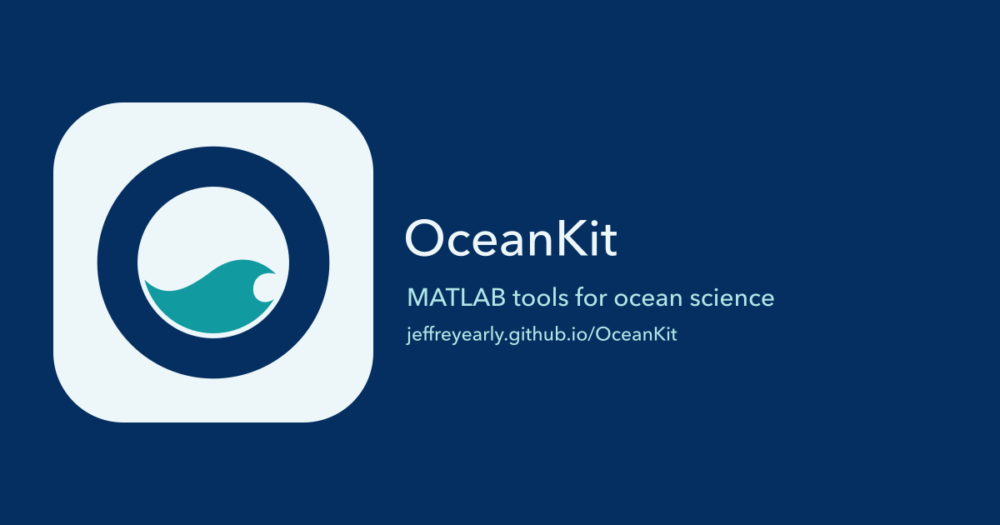

OceanKit branding
A circular navy O, one broad teal wave, and clear space that keeps the shape readable.
Marks and icons
Horizontal wordmarks
Browser icons at actual display sizes
Sharing card

Palette
Navy #052f60
Teal #119ba0
Pale #edf7fa